💴 CFD戦略ブリーフ — 9/7週
対象週: 2026-9-4_wk01（データ期間 2026-08-31→09-04 / snapshot 2026-09-06） ｜ ソース: review・meta・snapshot・boss(wr-2026-9-4 本体 9/5 ＋ Rex追記§A-I 9/5)・週末終値チャート13枚・口座3枚・--trade --news・X実データ ｜ CFD: 残 0.5 Lot（@4,311・ゼロ点 4,015.00）
★ 本週は snapshot の日付が揃っている（全ペア 2026-09-04・BTCのみ週末値）。機械 US10Y 4.784 = Boss TVC 週足終値 4.784（完全一致）。wk04 の特例は当週には適用しない。
Regime: Gold Bid（equities=flat / vol=normal / oil=range / gold=bid / crypto=strong / yields=rising）
Add risk gate: 開放（VIX 14.53<18）
Reduce: caution
介入 calm / watch_zone 161.0→160.50
★★ 今週の骨格 — 9/4 21:30 の NFP が +16.2万人（予想5.5万人の3倍近く）。しかも二重の上方修正。
7月が -2.3万人 → +2.1万人、6月も +3.1万人 へ改定。失業率 4.1% 据え置き、平均時給 前年比 +3.1%
（前月3.2%から鈍化＝インフレ再燃の決定打にはならない）。
→ 「雇用は冷えているが崩壊していない」から「雇用は底堅い」への解釈転換。
教科書通りの グッドニュース・イズ・バッドニュースで、9月FOMC利上げ織り込みが 52-54% → 59-61%、
米金利は全年限で上昇、ドル指数も上昇、株は逆に売られた
（ダウ -0.51% / S&P -0.38% / NASDAQ -0.29%。★小型株ラッセル2000のみ +0.25%）。
★★ Boss の短期予想（NFPが5.5万人を超えたら円安に巻き戻る）は的中したが、
中期予想（水曜まで円高）の前提だった「弱い雇用統計→FRBは動けない」が崩れた。
→ 来週前半は円高シナリオの再検証が必要（Boss 総括）。
★★ 米はスティープ化、日はフラット化。逆方向。（Rex§A・本体に項目なし）
米 2s10s 37.0 → 41.0bp（+4.0bp）は US2Y +1.4bp / US10Y +5.4bp の長期主導、
日 2s10s 121.9 → 108.5bp（-13.4bp）は JP2Y +12.7bp / JP10Y -0.7bp の短期主導。
★ JP2Y +12.7bp が当週で最も動いた金利。日銀9/17-18 の織り込みが2年に集中し、10年は GPIF の国内債回帰で頭打ち。
⚠️ Boss は「日銀が短期を利上げしても長期がブル・フラットニング的に頭打ちになるリスク」を警戒し、
日本国債はスティープ化（2年上昇・10年頭打ち）のポジションが妥当としている。
★★ 円高を駆動しているのは「短期の金利差」。（Rex§B）
2年 日米差 266.0 → 254.7bp（-11.3bp 縮小）／10年 日米差 181.1 → 187.2bp（+6.1bp 拡大）／USDJPY -2.43%。
→ ★ 円高は短期の金利差縮小と同方向、長期の拡大とは逆方向＝当週の円高は2年ゾーンが駆動している。
★ Boss の中期テーゼ「介入せずとも金利差縮小だけで20円規模の円高（2024年7月末の日銀利上げ後と同型）」の
内訳を初めて測れた週。
⚠️ サンプルは当週1件のみ。機構は閉じない。 → 事前登録 P11（承認済み・判定材料としてのみ使用、レジームスコアには入れない）。
★ 10年差でも同じ表を作り、どちらが説明力を持つかを併走させる。
★★ JH のタカ派効果は1週間で一部剥落していた。（Rex§C）
9月利上げ確率の経路は 35%（8/28 JH直前）→ 57-60%（JH直後）→ ★52-54%（9/4 NFP直前）→ 59-61%（NFP直後）。
→ ★★ NFPはそれを元の水準に戻しただけで、JH直後を大きく超えてはいない。
wk04 §E で「事前登録した非対称が低確率側で的中」と記録したが、その効果の持続性は1週だったという追記になる。
→ イベント由来の織り込みは減衰するという観測。
⚠️ P9（政府の長期金利抑制策は5営業日以内に剥落）と同型の現象だが、主体も対象も違うので同じ機構とは扱わない。別の観測として記録する。
1. 11ペア スナップショット（wk04 → wk01）
| 銘柄 | 最新（機械） | 30日% | wk04→wk01 |
|---|
| USD/JPY 9/4 | 156.221 / Boss 156.195 | -1.38% | ★-3.817 (-2.38%) |
| US100 9/4 | 29,544.150 / Boss CFD 29,493.3 | -0.60% | ★wk04 は nan だった |
| JP225 9/4 | 65,020.941 / Boss CFD 65,813 | -0.89% | -1,111.0 (-1.68%) |
| XAU/USD 9/4 | 4,429.800 / 4,476.600 / Boss 4,431.07 | +2.05% | ⚠️★同一日付で2値（§3） |
| WTI 9/4 | 91.480 / Boss 91.784 | +17.01% | ★+8.08 (+9.69%) |
| US3M 9/4 | 3.757 | +1.27% | +7.9bp |
| US5Y 9/4 | 4.550 | +4.31% | ★+15.4bp |
| US10Y 9/4 | 4.784 / Boss 4.784 | +2.66% | +11.2bp ★完全一致 |
| US30Y 9/4 | 5.246 | +0.67% | +5.5bp |
| US2Y (Boss実測のみ) | 4.374 | 週間 +1.4bp | ★FRED DGS2 で裏取り開始 |
| VIX 9/4 | 14.530 | -2.48% | +0.020 18割れ継続 |
| BTC/USD ⚠️週末値 | 79,671.969 | +22.80% | -585.6 ⚠️水準は未確定 |
Boss実測（9/4 週足終値）: XAUUSD 4,431.07（週足 -0.52% / 日足 -0.94%。O4,436.90 H4,510.90 L4,282.45）／ USDJPY 156.195（-2.43%） ／ EURUSD 1.16130（-0.11%） ／ WTI 91.784（+9.19%） ／ JP2Y 1.827%（★+12.7bp）/ JP10Y 2.912%（-0.7bp）
⚠️ wk04→wk01 の金利差は 8/27→9/4（6営業日）で週次ではない。他ペアは 8/28→9/4（5営業日）。週間騰落は Boss 実測が正本。
11ペア30日 正規化プロット（snapshot 2026-09-06）
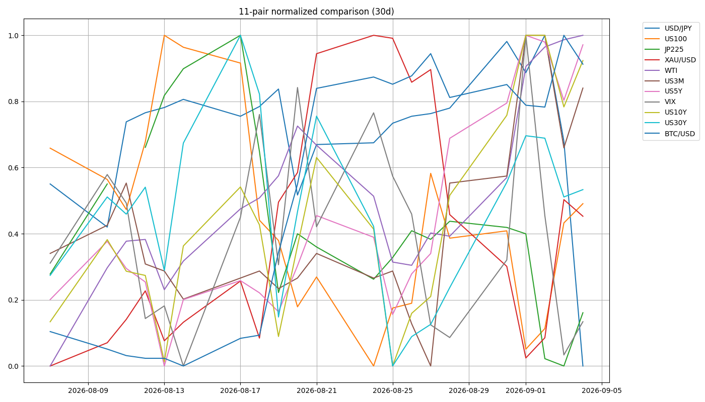
2. ★★ 金は下げたのに、執行で +173.27 pt·Lot 積んだ週
| 週初(8/28) | 週末(9/4) | 差 |
|---|
| XAUUSD | 4,454.26 | 4,431.07 | -23.19 (-0.52%) |
| 建玉 | 1.0 Lot @4,404.50 | 0.5 Lot @4,311 | — |
| 通算 pt·Lot | +163.26 | ★+336.53 | ★★+173.27 |
★★ 金は下げたのに通算は +173.27。 内訳は実現 +163.00 ＋ 含み増 +10.27。
確定5件・4勝1敗（勝率80.0%）で、前2週（wk03=2件、wk04=0件）から執行が一気に増えた。
| 効いた操作 | 効果 |
|---|
旧キャンペーンのラダー
4,460半値 → 4,380全決済 | 1.0 を 4,380 一括なら +89.00 に対し +129.00
差 +40.00 |
9/2 の再エントリー
4,309 / 4,313 | 再参入しなければ +129.00 止まり
差 +207.53 |
NFPの往復
4,394決済 → 4,374再入 | +10.00。建値は上がったが
ゼロ点は 4,232 → 4,222 に低下 |
★★ wk04 で記録した「設計の欠落」が翌週に執行として閉じた。
wk04 §4-3:「事前登録されていたのは配置の認識と 8/6 の前例だけで、行動が書かれていなかった。
パターン認識が正しくても、行動ルールが対になっていなければ結果には接続しない。判断の誤りではなく設計の欠落。」
（4,660.71 で半値決済していれば +266.49 / 実際 +163.26 → 差 +103.22）
| trigger（2026-08-29 登録） | action | 結果 |
|---|
| 月曜の寄りが 4,500水準を上回る | 継続 | — |
| 上回らない | 半値決済 | ★8/31 09:30 @4,460 で執行 |
| 4,400 を割る | 全決済 | ★9/1 20:00 @4,380 で執行
4H実体下抜け |
★★ 登録どおりに2件とも執行され、旧キャンペーンは +129.00 pt·Lot で完結した。
→ trigger / action / invalidation の3欄必須化の提案は、実効性が確認された。
3. ⚠️★★ 新しい故障モード — GC=F が同じ日付で値を変えた
| 実行 | latest | 30日変化 | Boss現物 4,431.07 との差 |
|---|
12:32 JST
本アーカイブの本文はこの実行に基づく | 4,429.800 | +2.05% | -1.27 |
約1時間後の再実行
H-4 実装後・charts/ の snapshot yaml はこちら | 4,476.600 | +3.13% | ★+45.53 |
| 差 | ★+46.80（+1.06%） | — | — |
★ GC=F の fast_info.lastPrice は 4,476.60 で、返ってきた「9/4 の終値」と一致していた。
→ 最終バーがライブ気配で上書きされているか、継続限月がロールした（GCU26 → GCZ26）可能性。
⚠️ どちらか確定していない。3ヶ月コンタンゴとして +1.06% は短期金利 ~4.3%年率と整合的だが、当方では検証していない。
⚠️★★ これは wk04 の「日付が割れる」とは別の故障モード——日付は正しいのに、同じ日付の値が変わる。
H-4（per-pair as_of）は前者を捕まえるが、後者は捕まえられない。
→ ★★ 機械の XAU/USD は本週の判断には使わない（★Boss 現物 4,431.07 が正本なので、本週の結論は変わらない）。
→ ★ 要Boss判断: 機械側の XAU ティッカーを現物系に変えるか、限月を固定するか。
⚠️ wk04 の 4,478.100（8/28・Boss現物との差 +23.8）が同じ現象の影響を受けていたかは未確認。遡及編集の禁止により wk04 は書き換えない。
4. ★★ 機械側の宿題が4件まとめて閉じた
① §D（実質金利チャネル）の事前登録が決着
| 日 | DGS5 | DFII5 | T5YIE | identity | ΔDFII5 |
|---|
| 8/27 | 4.38 | 2.07 | 2.31 | 0.00 | +1.0 |
| 8/28 | 4.48 | 2.18 | 2.30 | 0.00 | ★+11.0 |
★ 該当行は「+5bp 以上」＝「実質金利チャネルが働いている。8-2/8-3 とは別に『実質金利↑→金↓』を新規候補として立てる」。
⚠️ 本アーカイブは判定文を書かない（handoff §5-5「数値と§3の該当行までで止める」）。新規候補の定式化は Boss/Rex 側。
★★ wk04 で立てた範囲制約が実測で当たった。 Boss は他年限（US2Y +12.6bp / US10Y +5.4bp）で挟んで
ΔDGS5 ≈ +5〜+13bp → ΔDFII5 ≈ +6〜+14bp、符号は正、分岐は「+5bp以上」の公算と予測した。
実測 +10.0 / +11.0 でいずれも範囲内、符号も分岐も的中、関係式 ΔDFII5 = ΔDGS5 + 1.0bp も 11.0 = 10.0 + 1.0 で厳密に成立。
★ これは代理指標ではない——恒等式と他年限による範囲の制約であって、DFII5 の代わりに何かを使ったのではない。8-2 で2回失敗した代理立てとは別物。
★ 公表タイミング差も再現（n=2）——当週も T5YIE は 9/4（2.37）まで、DGS5/DFII5 は 9/3（4.52 / 2.15）まで。
1回限りではなく構造。 → §D 型の検定は「判定日の DGS5/DFII5 は翌週に取る」前提で設計する。
② 是正A（front を 2Y へ）— 初回で2つ分かった
| 起点 | 終点 | Δ |
|---|
| FRED（DGS2/DGS10） | 8/28 39.0bp | 9/3 43.0bp | ★+4.0bp |
| Boss（TVC 週足） | 8/28 37.0bp | 9/4 41.0bp | ★+4.0bp |
★★ 別フィードでも週次Δが完全一致。水準だけ 2.0bp ずれる。
→ ベンダーが違っても、同じ窓を取れば変化量は一致した。ずれているのは水準（オフセット）であって傾きではない。
★ Boss 実測の 2s10s に、単一ベンダー・NY引け基準の裏取りが1本ついた。⚠️n=1。
★★ 機械の Δ1w が符号ごと逆に出た。窓が1日ずれたため。
週次Δは「7暦日前以前の最後の終値」基準で、9/3 の7日前は 8/27 に落ち、8/28 を跨がない。
8/27 47.0 → 9/3 43.0 = -4.0bp（機械）／8/28 39.0 → 9/3 43.0 = +4.0bp（Boss と同じ窓）
★ 8/28（ウォーシュ当日）1日で 2s10s は -8.0bp フラット化しており、この1日を窓に入れるか外すかだけで符号が反転する。
→ ★ Boss の「次の一手」に従い change_*_bp_1w_window を実装。当週は 2026-08-27 -> 2026-09-03 と出るので、8/28 を跨がないことが一目で分かる。
★ 是正B も併せて実装: shape_3m10s の出力に「⚠️【政策期待の判断には使えない】front=3M は利上げ確率の織り込みを構造的に持たない（→ curve_fred）」を明記。
③ NaN → unknown の悉皆是正（H-3）
Boss訂正「関数ごとに if を足すのではなく、テストが穴の一覧を出す形にする」に従い、
build_regime_snapshot._num() を新設して値の入口で NaN を None に落とす。
1箇所に絞ったので既存の is None ガードが全判定関数で正しく効き、新しい判定関数を足しても同じ穴が開かない。
| # | 表明 |
|---|
| 1 | 欠損入力（None / NaN）が終端フォールバックのラベルに落ちない |
| 2 | relative_strength は算出不能なら出さない（verdict: mixed を出さない） |
| 3 | ★★NaN と None で regime ブロックが完全一致する |
| 4 | 1ペアだけ NaN のとき健全な軸は正しく判定され続ける |
★ 本丸は3本目。個別に if を足す是正では直し忘れた関数だけ差分が残るが、
ブロック全体の一致で縛れば、新しい判定関数を足したときに穴が開いた瞬間に落ちる。
（4本目は「全部 unknown を返すだけの関数」でも通ってしまう抜けを塞ぐため。）
tests/test_regime_nan.py ・ pytest 不要で単体実行可 ・ 4/4 pass
④ H-4（per-pair の as_of）＋ 窓の定義フィールド
fetch_trade_data が as_of / first_as_of / prev_1w_as_of を値と一緒に持ち回り、
snapshot 冒頭に ★snapshot_date_integrity（aligned / SPLIT / missing）を出す。
★ 24/7 銘柄（BTC/USD）は off_calendar_* として別枠にした。
常に日付が違うので SPLIT に数えると毎週点灯し、常時点灯する警告は読まれなくなる——
wk04 のような本当に割れた週を見落とす。
当週の出力: status: aligned（全ペアの latest が 2026-09-04 で揃っている） ／ off_calendar_2026-09-05: [BTC/USD]
★ ⑤ watch_zone 161.0 → 160.50（H-5）。Boss の口先介入リスクゾーンは 160.50〜160.55で、
161.0 では機械が calm を出したまま Boss の警戒線を 0.42〜0.47 円下に置き去りにしていた。
⚠️ 当週終値 156.195 でこの線は当面まったく無関係な水準だが、
「今は遠いから直さない」ではなく、次に近づいたときに機械が黙らないよう先に直した。
5. レジーム & ゲート状況
機械レジーム
Gold Bid
equities=flat / vol=normal / oil=range / gold=bid / crypto=strong / yields=rising
★relative_strength の mixed は wk04 と同じラベルだが中身が違う（wk04 は NaN の産物、当週は実際の値）
Add risk ゲート
開放
VIX 14.51 → 14.53 < 18。⚠️ただし骨格は「FRBのタカ派再評価」と「日銀・GPIF由来の構造的円高圧力」の綱引きで、★★9/10 PPI・9/11 CPI が決着点
Reduce risk ゲート
caution
★US2Y 4.416 上抜け / US10Y 4.810 超え / Gold 4,400 割れ → 4,280 で撤退 / US100 29,157 / JP225 ★9/18 会合 / USDJPY 155.30-155.70 / WTI 89.599 / BTC 77,588
6. シナリオ（★主要リスクごとに反対方向の分岐を明示）
| 項目 | 悪化側 | 改善側 |
|---|
| 米金利 | US2Y 4.416%（チャネル上限）を上抜け → 4.42-4.43%台。US10Y 4.810 超えで 4.85% 方向 | US2Y が 3.672%（チャネル下限）方向へ巻き戻し。US10Y 4.745% 割れは金利低下トレード |
| ゴールド | 4,400 を守れない → 4,367.10 → 4,337.74（200日線近辺）→ 4,282。★4,280 の4H実体下抜けで撤退 | CPI/PPI が鈍化 → 4,490.32 → 4,519.97 → 4,573.95 までショートカバー。再エントリーは 4,367-4,408 の反発待ち |
| 米国株 | 29,157 割れ → ★押し目待ちより下値警戒優先 | 29,541-29,754 のレンジ上限は利食い目線。9/16 FOMC まで高ボラのレンジ想定 |
| 日本株 | ★★9/17-18 日銀会合＝2024年8月型の急落リスク（日経-20%規模）。9/18 接近での新規ロング積み増しは避ける | 65,400-65,800 が次のターゲット。GPIF国内回帰＋キオクシア材料が下支え。直近抵抗 67,385 |
| ドル円 | 9/10 PPI・9/11 CPI が強い → 158円台回復・円安再加速 | 弱い → 155円割れから円高トレンド再開（155.30-155.70 割れで 154.40-154.90） |
| ユーロドル | 1.1580 割れ | 1.1660 上抜け。★ECB（9/10）が先、米CPI（9/11）が後という時間差がトリガー |
| WTI | 89.599-88.320 を割る → 中期 86.167。86.2 割れは中期トレンド転換のシグナル | 92.404-92.685 を上抜け。★封鎖・施設攻撃の確証で 95-100 超え |
| BTC | 77,588 割れ → ポジション縮小 | 80,415-81,375 奪回 → 83,795 試し。⚠️水準そのものが未確定 |
| 日本金利 | JP2Y 1.848%（直近高値）超えは加速のサイン → 9/18 利上げ → 円高転換 | JP10Y が 2.90-2.92% のレジスタンス帯で頭打ちのまま → スティープ化のポジションが妥当 |
7. CFD 銘柄別アクションプラン
XAU/USD（CFDゴールド） 残 0.5 Lot @4,311
週足終値4,431.07（週足 -0.52% / 日足 -0.94%）
週足OHLCO4,436.90 H4,510.90 L4,282.45（レンジ 228.45pt）
確定5件・4勝1敗（勝率80.0%）／+163.00 pt·Lot
含み+60.03 pt·Lot
新キャンペーン計 / 通算+207.53 / +336.53
ゼロ点4,015.00（週足終値から -416.07pt 下）
撤退設計（★Boss確定 2026-09-05）: 週足最終防衛ライン 4,280水準の4H実体下抜け確定 → 撤退。
4,280 は 9/2 の安値（4,282.97 / 4,282.59）＝このキャンペーンの起点で、起点を割れば、この上昇の前提そのものが消えるという形。
★ 撤退しても +132.00 が残る（旧キャンペーンは撤退水準でほぼゼロだった）。
週足終値から撤退水準まで 151.07pt（-3.41%）。
★ 9/7(月) の米国休場を挟む3連休の窓に対しても、この幅は十分な余裕がある——
窓が一段で 4,280 を飛び越えるには -3.41% が必要で、8/28（-3.21%）に匹敵する規模。
⚠️ 4,400 圏は3本が10pt以内に固まった帯（短期波Fibo50 4,397.93 / 日足波Fibo38.2 4,409.24 / キリ番 4,400）。
現時点では区別する実益がないが、上昇が続くと分かれる。★可動の線は再計算してから使う（trade_results §15）。
US2Y / US10Y（金利） Boss実測が正本
US2Y4.374%（+1.4bp） O4.339 H4.423 L4.331
US10Y4.784%（+5.4bp） O4.762 H4.810 L4.748
米 2s10s41.0bp（+4.0bp・スティープ化）
★★ US2Y の上昇チャネル上限 4.416% は終値 4.374% の 4.2bp 上。
NFPで一時 4.423 まで上抜けたが 4.374 へ戻した。実体で定着するかが次の分岐。
★ PPI/CPI が強含めば 4.416% 上抜け・4.42-4.43%台への追随上昇、鈍化すれば 3.672%（チャネル下限）方向への巻き戻し。
FOMCまでは金利先物・2年債が最もイベントドリブン——ポジションは短期回転中心。
★ US10Y はサポート 4.745%（割れは金利低下トレード）／4.810 超えは上昇継続のブレイク → 次の節目 4.85%。
⚠️ 財政プレミアム（ロング枠の需給）も絡むため2年債ほど素直にFOMC確率と連動しない（Boss）。
★ 当週から FRED DGS2 で US2Y の裏取りが入った（curve_fred）。Yahoo には2年債指数が無いので、この空欄が埋まったのは当週から。
US100 CFD 29,493.3
+0.14%。⚠️現物のマイナス（ダウ-0.51%/S&P-0.38%/NASDAQ-0.29%）とねじれるのは日足切替(23:00 JST)が現物引け後の戻りを拾うため。29,157-29,271 が直近サポート（★割れは押し目待ちより下値警戒優先）／29,541-29,754 は利食い目線。9/7 は米国休場で手掛かりが薄い
JP225 CFD 65,813
+1.77%。金曜は 64,287→65,951 まで駆け上がった。★押し上げ役は円安ではなく GPIF の国内回帰方針＋キオクシア新型BiCSフラッシュ材料（200A・2243保有と整合）。★★最大の警戒点は 9/17-18 の日銀会合そのもの
USD/JPY 156.195
-2.43%（H156.750 L155.289）。155円台前半のサポートを死守。戻り売り一次 156.50-157.20・二次 158.10-158.60／下値 155.30-155.70 → 154.40-154.90。★9/9(水)引けが P12 の判定日
EUR/USD 1.16130
-0.11%。★ドル指数+0.3%なのにほぼ変わらず＝ドル円が円独自要因だったことの裏づけ。下値 1.15759-1.15599／上値 1.16494-1.16603。1.1660 上抜けか 1.1580 割れのブレイク待ち
WTI 91.784
★+9.19%・当週最大の変化（H92.685 L89.237）。92ドル手前でダブル/トリプルトップ。サポート 89.599-88.320／中期 86.167／抵抗 92.404-92.685。⚠️レンジ上限での新規ロングは避け、サイズは小さめ・逆指値必須
BTC ⚠️未確定
本体本文 79,540.37 ／ 出典タイトル $81,000超で約1,500ドルの差（Rex§F）。★片方を採用して確定値にしない。77,588 を守っている間は押し目買い目線、割ればポジション縮小
8. 金利カーブ & インフレ補償
points_pct {3M 3.757, 5Y 4.550, 10Y 4.784, 30Y 5.246}（すべて 9/4）。
5s10s +23.4bp（bear_flattening）／3m10s +102.7bp（bear_steepening・positive）／
belly_premium +29.3bp（★wk03 +21.3 → wk04 +23.4 → wk01 +29.3 の3週連続拡大＝政策ターミナル織り込みの瘤）／
10s30s +46.2bp（Δ1w -2.4bp・narrowing。窓 2026-08-28 -> 2026-09-04）。
⚠️★ shape_3m10s は【政策期待の判断には使えない】（是正B）。政策期待は下の curve_fred の 2s10s で読む。
curve_fred（新設・FRED DGS2/DGS10・NY引け基準）
as_of2026-09-03（Yahoo側より1営業日古い）
US2Y / US10Y4.34% / 4.77%
2s10s+43.0bp
change_1w-4.0bp ⚠️窓が 8/28 を跨がない
change_1w_window2026-08-27 -> 2026-09-03
★ curve_spreads（Yahoo・front=3M）とは別ブロック。統合しない。
2つ同時に出るのは重複ではなく、フィード差を測れる状態を意図的に作っている（年輪§8(e)）。
⚠️H.15 は1営業日遅れるので速報性は解決しない——「速い系列（Boss実測・Yahoo）」と「揃った系列（FRED）」を別レイヤーで持つ設計。
インフレ補償（FRED・as_of 2026-09-04）
| 水準 | Δ1w | Δ30d | direction |
|---|
| 5Y BE（T5YIE） | 2.37% | ★+7.0bp | +19.0bp | widening |
| 5y5y BE（T5YIFR） | 2.33% | +1.0bp | +7.0bp | widening |
★★ wk04 は両方 narrowing（-4.0 / -2.0bp）。当週は両方 widening で方向が反転。
★★ 近期が長期の7倍動いた（+7.0 vs +1.0bp）——2本持っている理由がそのまま出た形で、
5Y BE だけ大きく動いて 5y5y がほとんど動かない＝市場は当週のインフレ材料を「一時的」と見ていると読める配置。
⚠️ ただし判定はしない（閾値未設定・レジームラベルにも複合指標にも混ぜていない）。
⚠️ 原油との相関は自動計算しない——当週 WTI +9.19% と方向は揃うが機構として結ばない
（7/28-29 FOMC 議事録が「インフレ補償は原油高にほとんど動かず」と明示）。
9. 週内タイムライン
- 8/31 — ★金が 4,500水準を日足で割り、事前登録の「半値決済」が発火（09:30 @4,460）。
- 9/1 — ★4,400水準を4H実体で下抜け、事前登録の「全決済」が発火（20:00 @4,380）。旧キャンペーン +129.00 で完結。
★ 同日 証券口座のリバランス: 513A 売100口@847.2 ／ 200A 売1口・買24口 ＝ 差引 -13,814（スィープ減少額と完全一致）。513A 実現損 -17,780＝損出し執行済み。
- 9/2 — ★日足節目 4,280 で反発 → 新キャンペーン開始（4,309 / 4,313）。ADP 下方修正で急騰し 22:40 @4,390 で 1.0 Lot 決済。
- 9/3 — PMI非製造業 確報 56.8 → 56.5／コンポジット 56.0 → 55.0（★-1.0 大幅下方修正）／ISM非製造業 55.4（+1.2 上振れ）。NY大幅反発（ダウ +1.18% / ナスダック +1.40%）。
★ 8/21 に「ソフトデータ1本で機構は閉じない」と記録した判断が、確報で裏づけられた。
- 9/4 21:30 — ★★NFP +16.2万人＋二重の上方修正。金は 4,374 まで急落後にV字回復し Fibo50(4,397.93) を守って4H確定。
- 9/4 — ★米軍がイランのタンカー3隻を攻撃・破壊（--news ①）／⚠️トランプ大統領が戦争を「取るに足らないことだ」と矮小化（--news ②）。方向が逆の材料が同時に出ている。
- 9/7 月（行動週の起点） — 米国休場（レイバーデー・株式のみ休場／為替とBTCは平常通り）。★★3連休で窓が通常より1日長い。
- 9/9 火 — EIA月報。★P12 の判定日（休場明け最初のフルセッション。156.195 より円高なら時間軸維持／円安なら前倒しで崩れたと確定）。
- 9/10 木 — 米PPI ＋ ECB理事会（ECBが先・米CPIが後の時間差がユーロドルのトリガー）。
- 9/11 金 — ★★米CPI（今週の最重要指標）。当週の原油 +9.19% が数字に出るかの最初の確認。
- 9/15-16 — FOMC（誘導目標 3.50-3.75%、利上げ確率 59-61%）。
- 9/17-18 — ★★日銀会合（利上げ確率約8割、0.25%が基本線・0.5%の可能性も）。
10. 監視トリガー（毎朝チェック）
★★ US2Y 4.416%（上昇チャネル上限）上抜けで 4.42-4.43%台 ／ 鈍化なら 3.672% 方向（終値 4.374 は 4.2bp 下）
★ US10Y 4.745 / 4.810 / 4.854.745 割れは金利低下トレード ／ 4.810 超えは上昇継続のブレイク
★★ Gold 4,400（第一関門）割れ → 4,367.10 → 4,337.74 → 4,282 ／ ★4,280 の4H実体下抜け確定で撤退
Gold 4,490.32 / 4,519.97 / 4,573.95CPI/PPI 鈍化ならショートカバーの目標
US100 29,157-29,271 / 29,541-29,754割れは下値警戒優先 ／ 上限は利食い目線
★★ JP225 は 9/17-18 の日銀会合そのもの2024年8月型の急落リスク。9/18 接近での新規ロング積み増しは避ける
USDJPY 156.50-157.20 / 158.10-158.60 / 155.30-155.70戻り売り一次・二次 ／ 下値サポート（割れで 154.40-154.90）
EURUSD 1.1660 / 1.1580 ・ WTI 89.599 / 92.685 / 86.167ブレイク待ち ／ 各サポート・抵抗
BTC 77,588守っている間は押し目買い目線（⚠️水準そのものが未確定）
★ 日本金利 JP2Y 1.848 / JP10Y 2.90-2.921.848 超えは加速のサイン ／ JP10Y が頭打ちならスティープ化のポジション
11. Boss提供チャート（週足確定 / 2026-09-04 close・13枚）
XAU/USD — 4,431.07（週足 -0.52% / 日足 -0.94%）。O4,436.90 H4,510.90 L4,282.45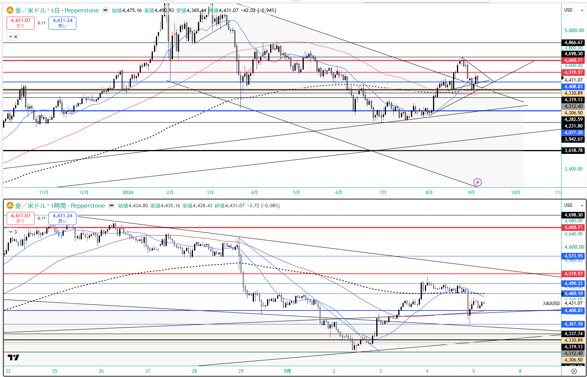
US2Y — 4.374%（+1.4bp）。★上昇チャネル上限 4.416% に接近（NFPで一時4.423）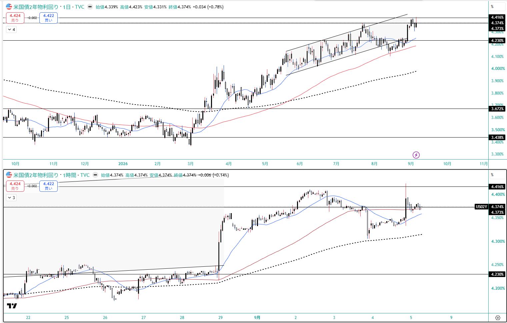
US10Y — 4.784%（+5.4bp）。サイクル高値圏。★機械と完全一致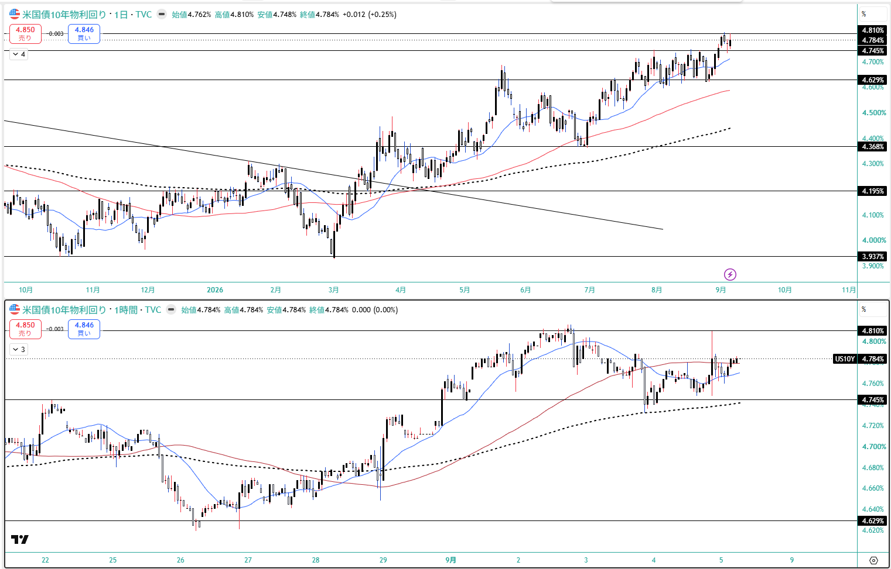
US30Y — 本体に週足終値の記載なし（NFP直後は +0.5bp・ニュース由来）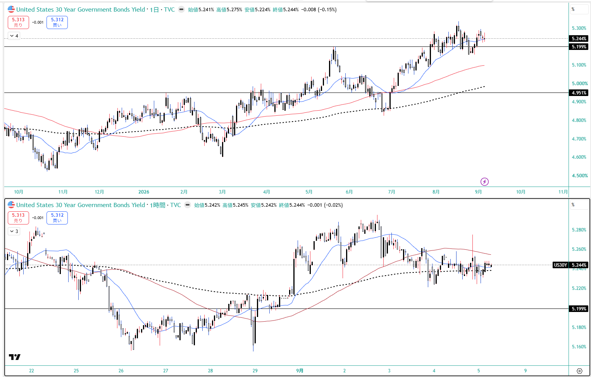
★ JP2Y — 1.827%（+12.7bp）。当週で最も動いた金利・歴史的高水準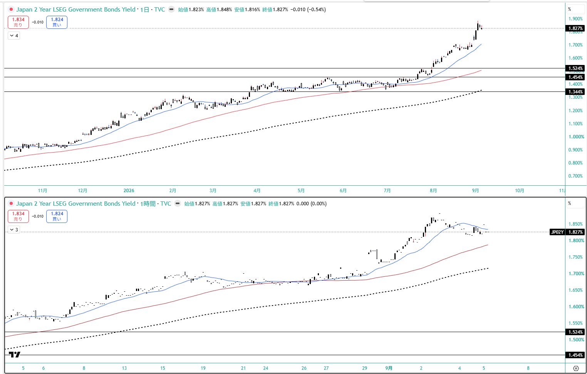
JP10Y — 2.912%（-0.7bp）。3.0%に接近しつつ反落。GPIF の国内債回帰が需給を支える可能性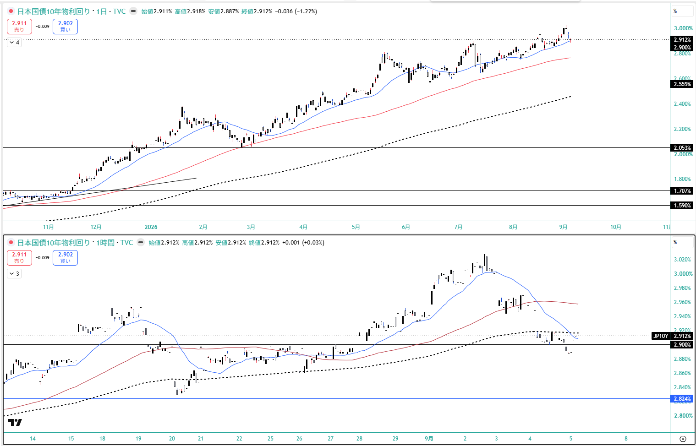
USD/JPY — 156.195（-2.43%）。H156.750 L155.289。155円台前半のサポート死守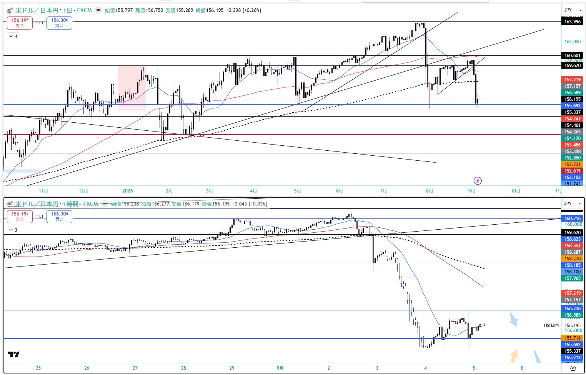
EUR/USD — 1.16130（-0.11%）。★ドル指数+0.3%なのにほぼ変わらず＝円独自要因の裏づけ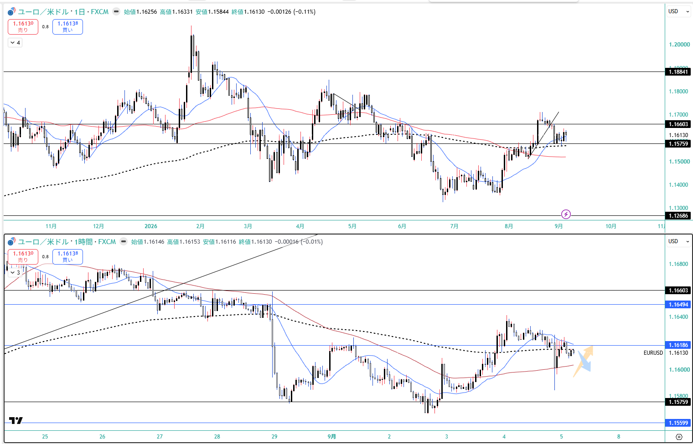
DXY — NFP直後 +0.3%（ニュース由来。本体に週足終値の記載なし）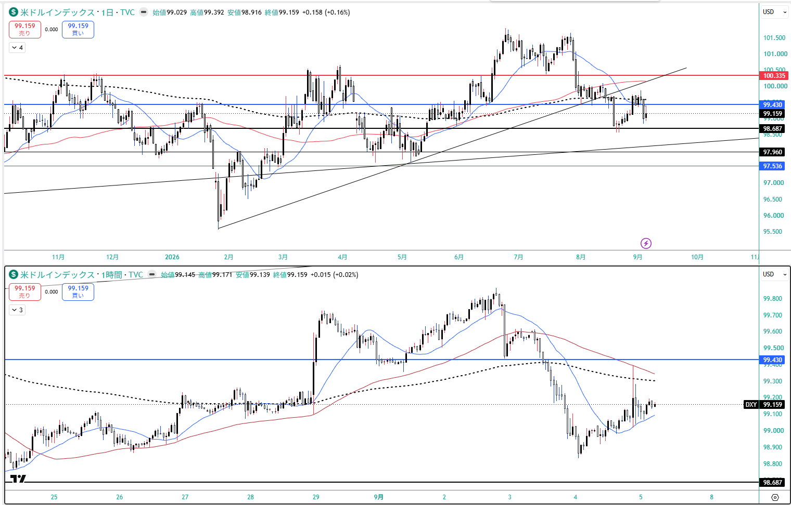
WTI — 91.784（★+9.19%・当週最大の変化）。H92.685 L89.237。92手前でダブル/トリプルトップ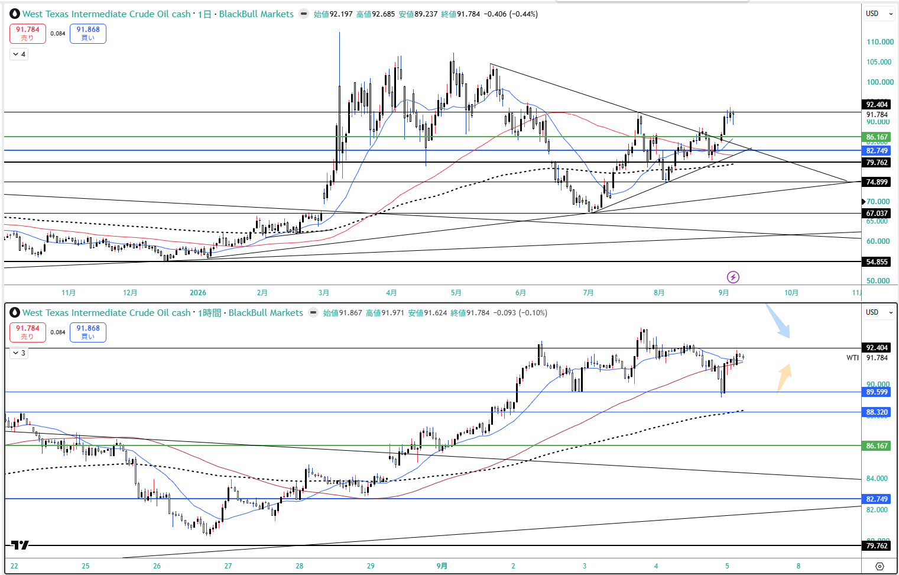
US100 — CFD 29,493.3（+0.14%）。⚠️現物のマイナスとねじれるのは日足切替(23:00 JST)のため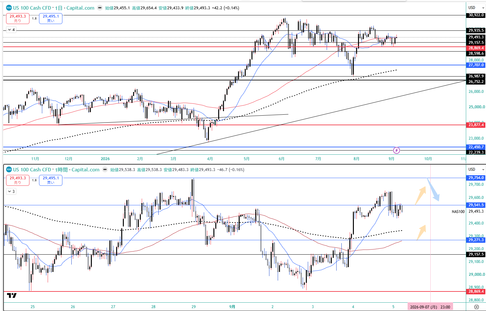
JP225 — CFD 65,813（+1.77%）。★押し上げ役は円安ではなく GPIF国内回帰＋キオクシア材料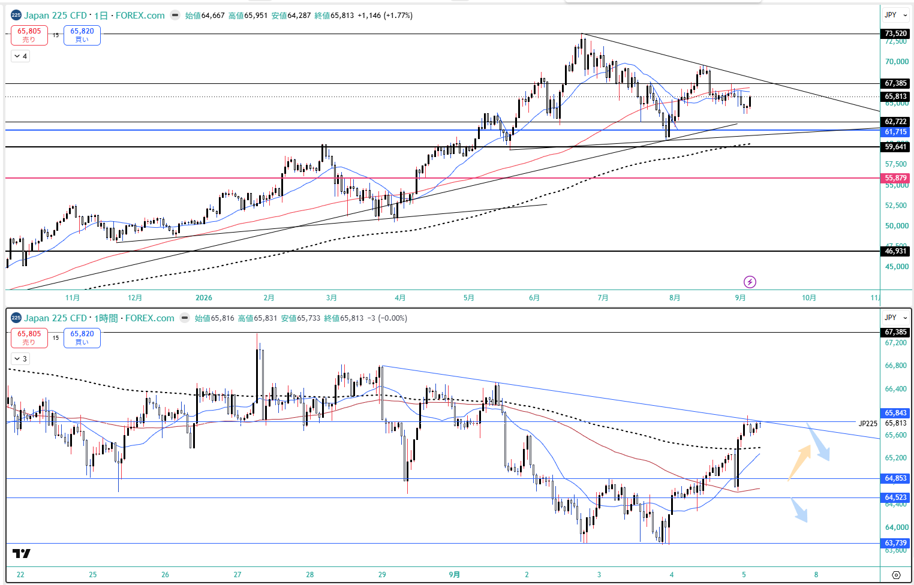
⚠️ BTC — 未確定（本体本文 79,540.37 / 出典タイトル $81,000超で約1,500ドルの差）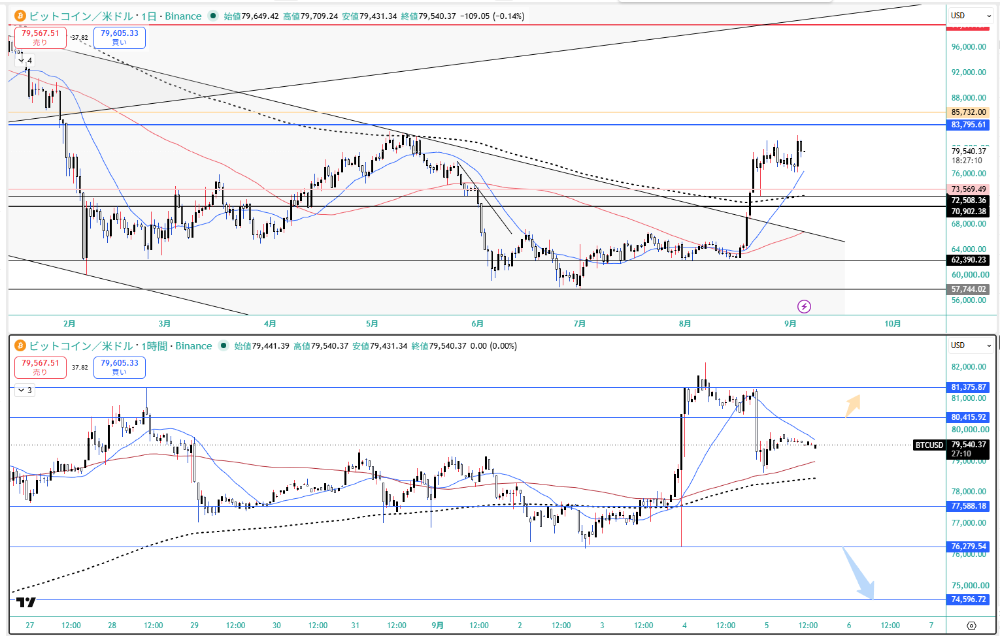
12. GMポートフォリオ（2026-09-06 12:10）
総資産
4,906,965円
wk04 5,053,619円 → ★-146,654円（-2.90%）
評価損益
+321,241円 / +7.00%
wk04 +450,101 / +9.77% → -128,860 / -2.77pt
スィープ
251,782円
wk04 265,596円 → -13,814円（★9/1 のリバランスと完全一致）
★★ 513A は 9/1 のリバランスで売却済み — 3つの疑問が1件で説明された。
関所で「保有一覧から消えている／trade_results §10 の『当週の売買なし』と矛盾／スィープが売却の向きと逆」の3点を上げたが、
Boss報告（2026-09-06）により1件のリバランスで全部説明がついた（§10 訂正版）。
513A 売100口@847.2 = 84,720 ／ 200A 売1口@4,282 ／ 200A 買24口@4,284 = 102,816 ＝ 差引 -13,814
→ ★★スィープの減少額と完全一致。「売却なのに現金が減っている」のは、売却代金を上回る額を 200A に投じたから。矛盾ではなく整合だった。
★ 513A 実現損 -17,780円（100口 @1,025 → @847.2）＝損出しは執行済み（6954 ファナックは未執行のまま）。
200A は 68口@4,327 → 91口@4,316（買24 − 売1 の純増・画面表示と一致）。
★ 8/23以降「自律反発を待つ」として保留していた判断が 9/1 に決着した（8/22 @839 → 8/28 @860 → 9/1 @847.2）。
待って +8.2円/口＝+820円、税効果込みで約 +650円の改善。
→ ★ 当時出した「税は急ぐ理由にならない」という判断は、結果としても正しかった。
⚠️ §10 初版の「当週の売買なし」は Rex側が執行報告を受けていなかったための欠落。当週は証券口座の売買が「あった」週である。
★★ 当週の主役は「為替の素通し」。
米国株は外貨建てで +155.26 → +233.26 USD（+78.00 USD / +2.46pt）と改善したのに、円換算では +20,021 → +21,411円（+1,390円）しか増えていない。
★ 最も明快な実例は SPCX: 外貨建は -73.19 → +10.66 USD でプラス転換したのに、円換算は -9,418円のマイナス。
（★口座表示からの逆算: 取得 310,076円 ÷ 1,912.69 USD = 162.11 → 現在 300,658円 ÷ 1,923.35 USD = 156.32）
→ trade_results §17「2243・1655 はほぼ確実にヘッジ無し」で予告された為替の素通しが、当週から口座の数字に出始めた（⚠️目論見書での確定は未実施）。
★ 評価損益の比較は構成が変わっている。
wk04 の +450,101 には 513A の含み損 -16,500 が含まれていた。
513A を除いた比較可能ベースは +466,601 で、当週の +321,241 との差は ★-145,360。
→ ヘッドラインの -128,860 より約16,500 大きい（含み損が実現に移った分だけ、見かけ上は改善方向に働いている）。
⚠️ 200A を24口買い増しているため厳密な同一構成比較ではない。概算として読む。
★★ 425A の騰落を「金の週足」と比べてはいけない — 窓の不一致（trade_results §10-5）。
425A 週間 -4.48%（390.9 → 373.4）に対し、金の週足 -0.52% ＋ 円 -2.43% の合成は -2.93% で ★1.54pt 合わない。
原因は、東証ETFが「東証引け 15:00 JST」時点の原資産を反映すること。
★★ 8/28 15:00 JST はウォーシュ講演（23:00 JST）の前で、その時点の金は約 4,600圏。
15:00 基準で再計算すると -4.90% となり、実測 -4.48% とほぼ一致する。
→ ★★ 東証上場の外貨建てETF（425A・2243・1655）を、CFD/FX の週足終値（土 06:00 JST）と突き合わせるのは窓の不一致。年輪§8(e) の同型。
東証銘柄の週次比較には「東証引けの原資産」を使う。
⚠️ §17 の為替ヘッジ検証も、この窓ずれを含んだ概算である。
★ ただし結論は変わらない——1655 と US100 の乖離 2.0% は、窓ずれで説明できる幅を超えている。
国内株式(現物)4,121,781円 / +299,830円 / +7.84%（wk04 +430,080 / +11.24%）
米国株式533,402円 / +21,411円 / +4.18%（外貨建 +233.26 USD / +7.34%）
特定（1,653,319円 / -30,937）: 200A -637（wk04 -3,196）／425A特定 +7,800（+20,925・★-13,125）／586A +1,900／
6954 -27,400（-15,300・★-12,100 と悪化）／7011 -12,600（+14,500・★★-27,100 で符号反転＝個別最大の悪化）
NISA（2,468,462円 / +330,767）: 1655 +26,622／2243 +272,136（-33,060 だが単独最大の牽引役は維持）／2638 +44,969／2847 +28,240／
425A NISA -41,200（-6,200・★★-35,000 で大幅悪化）
★ 425A は特定 +7,800 ／ NISA -41,200 で符号が分かれたまま（取得単価 363 vs 394）。金の下落と円高が同時に効いた。
米国株: GDX +222.60 USD / +30,829円（wk04 +228.45 USD / +36,587円）／ SPCX +10.66 USD / -9,418円（wk04 -73.19 USD）／ 預り金 0.00 USD
⚠️ 本資料は 2026-9-4_wk01 の確定データ（snapshot 2026-09-06 / review / meta / Boss市況 wr-2026-9-4＝本体 2026-09-05 ＋ Rex追記§A-I 2026-09-05 / 週末終値チャート13枚 / 口座3枚 / --trade --news / X実データ）に基づく整理であり、創作・ソース外情報は含まない。
★ 本週は snapshot の日付が揃っている（全ペア 2026-09-04・BTCのみ週末値）。機械 US10Y 4.784 = Boss TVC 週足終値 4.784（完全一致）。⚠️ただし wk04→wk01 の機械の金利差は 8/27→9/4（6営業日）で週次ではなく、週間騰落は Boss 実測が正本。
⚠️ ベンダー混在（Rex§I）: XAUUSD=Pepperstone / US2Y・US10Y・JP2Y・JP10Y=TVC / USDJPY=FXCM / WTI=BlackBull / US100=Capital.com / JP225=FOREX.com。1本の系列に混ぜない（年輪§8(e)）。
⚠️ ニュース由来の数値とチャート実測を混ぜない（Rex§E）: 本体の US2Y +5.3bp は発表直後の反応の大きさ、TVC日足実測 +3.4bp は日足の確定値。1.9bp の差はどちらも誤りではない。
⚠️ ゴールドの騰落率は2つとも正しい——日足 -0.94%（本体）／週足 -0.52%。週次に置くなら週足。
⚠️ X上の数値はすべて未突合（FOMC 58-60% / 日銀 75%→97% / NFPの内訳が狭い〈飲食・バー ~59k ＋ 地方政府の教育 ~42k〉/ 高田委員「機動的に」/ ホルムズ通航隻数）。★日銀確率は Boss 約8割 vs X 最大97% で 17pt の開き。単一の数字で語らない。
X の「ゴールドが ~4,700 圏に接近」は当方記録（当週高値 4,510.90）と合わないため採用していない。⚠️ X の取得は5項目で打ち切られている（日経/GPIF・BTC は返らず）。
★ 関所の決着（Boss 2026-09-06）: ①513A は 9/1 のリバランスで売却済み（§10 訂正版）②P11 / P12 を承認 ③P9 は継続、P10 は「発言日」の定義が決まるまで登録しない ④H-4 は実装推奨（→実装済み）⑤BTC は未確定のままで正しい ⑥private_trades.csv は当週5件のみで正しい。過去週の遡及追記はやるなら別コミット＋理由の明記 ⑦是正分（settings.py / regime.py / market.py / tests/）は週次とは別コミット。
✅★★ 2243・1655 の為替ヘッジが一次資料で確定（Boss 2026-09-06 / trade_results §18）——両方とも原則ヘッジなし。あわせて連動指数も確定: 1655 = S&P 500（500社に分散）／2243 = フィラデルフィア半導体株指数 SOX（米国上場の半導体主要30社・テーマ型）。★あわせて 2026-08-23 の記録を訂正——2243 の「上位10で 69.21%」を集中として読んだのは誤りで、SOX は30銘柄の時価総額加重指数なので正常な分布。★★誤りの型は「事実が違った」ではなく「並べ方で誤った含意が乗った」（200A の上位3で 54.79%＝本物の集中と同じ表に並べたため）。★★§17 の検証手法が独立した一次資料で裏づけを得たが、⚠️代理指数のずれを含む／円の変動が小さい週には使えない／n=1という限界も同時に確定した。★USD建て約30%は全部ヘッジ無しだが、為替は共通でも原資産のリスクは揃っていない（1655=S&P500 の分散 vs 2243=SOX 30社のテーマ型）。
⚠️ 未確認の持ち越し: 5/11 に 1627 を売却した理由（4週連続）／8-2/8-3 棄却後の立て直し／⚠️★GC=F が同一日付で2値を返した件（→ 要Boss判断）。
投資助言ではなく GM運用の作戦整理。最終判断はミナト。 生成: ClaudeCode / 2026-09-06。